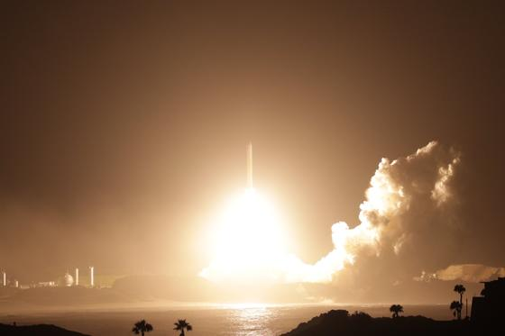
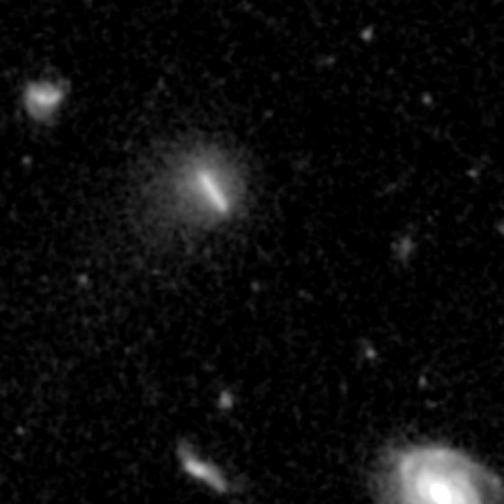
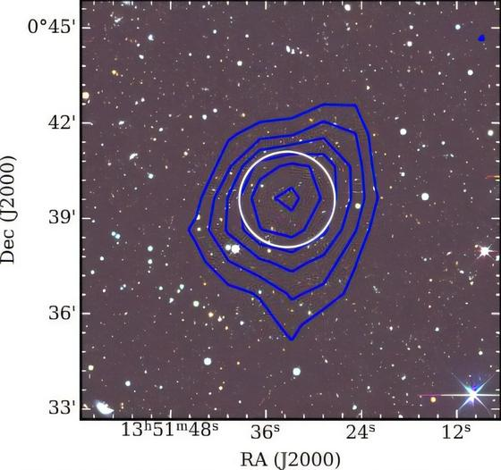
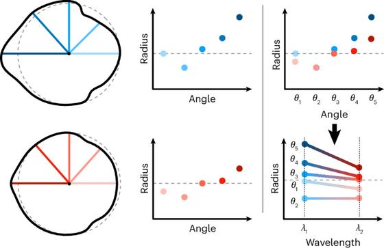
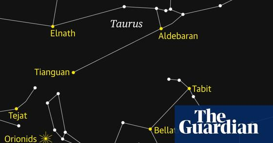
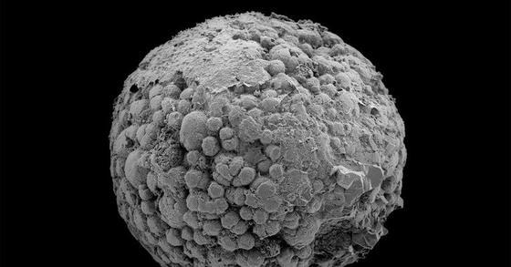
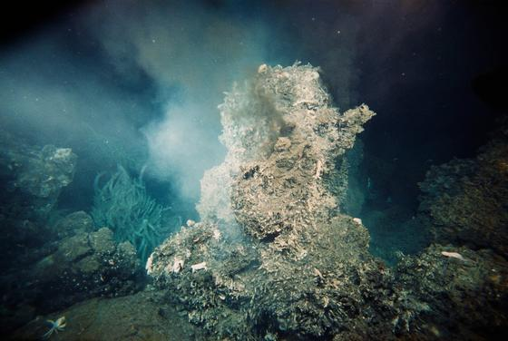
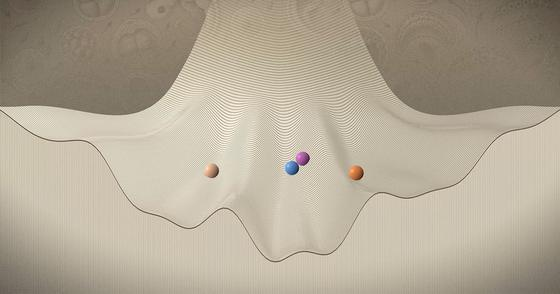
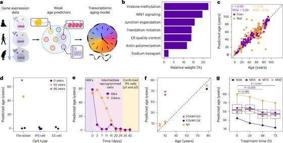

📍 San Jose: 66° / 49°F, Overcast
⏱ ~68 min reading
115 items
|
The Morning Brief
Executive Personal Intelligence Briefing
|
Tuesday, October 20, 2026
Sunrise 07:27 · Sunset 18:14 · AQI 38 · Moon: Full moon, 97% lit
|
|
Executive Synthesis: LLM judges that flip their own verdicts, OpenCode 2.1 and Salesforce's $5.7 billion Braze deal lead the day, while Euclid finds a comet, Hormuz tensions climb, and Diwali weekend events open in the South Bay.
Cosmos and Life
Euclid has found its first new comet, Japan's MMX probe is on its way to Phobos, and the Orionid meteor shower peaks overnight on 21 to 22 October, though the Moon will interfere. On the life-science side, Nature mapped mitochondria across the tree of life and Yale reports that animals may have evolved well before their oldest known fossils.
Space, astronomy and cosmology

Japan's MMX probe launches toward Mars to bring back samples from Phobos
—
JAXA's Martian Moons eXploration spacecraft lifted off on an H3-24L rocket from Tanegashima on 19 October at 19:41 UTC. The 4,480 kg probe is on a ten-month trajectory and should reach Mars in August 2027, then settle into a quasi-satellite orbit around Phobos. It carries 13 science instruments, including NASA's MEGANE, plus the CNES/DLR IDEFIX rover. A Phobos sample is due back on Earth in 2031.
Takeaway: Fits your Mars-missions interest: this is the first mission planned to return samples from a Martian moon, arriving in August 2027.

Euclid discovers its first new comet, C/2026 S1
—
ESA's dark-universe telescope has found a previously unknown comet in images taken between 16 and 24 September. A University of Helsinki PhD student's moving-object software flagged a streak in the Euclid Deep Field North, and the Minor Planet Center confirmed it on 8 October as C/2026 S1 (Euclid). It lies about 1.3 billion km away on an orbit lasting thousands of years. Euclid normally avoids the Solar System's plane, so the catch was partly luck.
Takeaway: Euclid is on your followed-missions list; this side result from its dark-matter and dark-energy survey is also a trial run for coordinating with ESA's Comet Interceptor.
Primordial helium measured to 0.5% precision from 15 pristine galaxies
—
An international team measured how much helium formed in the first five minutes after the Big Bang, cutting the uncertainty to 0.5%, about three times tighter than earlier estimates. They used 130 hours of Large Binocular Telescope spectra of 15 very metal-poor galaxies, fitting more than 10 helium and 15 hydrogen lines at once to correct small systematic errors. The result, reported in five Astrophysical Journal papers, also constrains the number of neutrino families.
Takeaway: Light-element abundances are a third check on the early universe alongside the CMB and expansion-rate work behind the Hubble tension you follow.

FAST telescope finds an isolated, starless hydrogen cloud: a dark-galaxy candidate
—
China's FAST radio telescope found J1351+0039, a compact cloud holding nearly 500,000 solar masses of neutral hydrogen, with no stellar counterpart in DESI images and no tidal tails or companions. Its dynamical mass is about 130 million suns, so dark matter dominates. Its gas is held up by random motion (about 11.6 km/s) rather than rotation (about 4.2 km/s), which the authors say is consistent with a starless dark-matter halo (a RELHIC) in the lambda-CDM picture. A very faint stellar counterpart could still be missed, so JWST or Hubble imaging may be needed to confirm it is truly starless. The preprint appeared on 24 September.
Takeaway: A direct test of lambda-CDM predictions about dark-matter halos that never formed stars, squarely in your dark-matter and cosmology interest.

JWST maps the lopsided atmosphere of the hot Jupiter WASP-17b
—
A Cornell- and Bristol-led team applied a new 'transmission strings' method to JWST data and mapped how far WASP-17b's atmosphere extends around its limb, from equator to pole. They find about 1,522 K on the evening side against about 858 K on the morning side, a gap near 650 K, with water and CO2 abundances roughly constant around the limb, in line with circulation models. It is a step from day-night averages toward 3D exoplanet maps.
Takeaway: JWST exoplanet atmospheres are part of your exoplanet interest; this goes beyond day/night averages to latitude-resolved structure.

Orionid meteor shower peaks overnight 21-22 October, with Moon interference
—
Earth is crossing dust shed by Halley's comet, giving the annual Orionids, which peak overnight on 21-22 October with roughly 10-20 meteors an hour under ideal conditions. A bright waxing gibbous Moon will drown out fainter streaks until it sets, so the darker pre-dawn hours, with Orion climbing high, are the better window. No equipment is needed; use a spot with a wide view of the sky and check your local moonset time.
Takeaway: Sky events this week is one of your listed space interests, and this one needs no equipment.
Biology and science
Mitochondria mapped across the tree of life, reopening the question of when they arose
—
A consortium has catalogued the mitochondrial proteins of five single-celled parasites and one plant, reported in nine papers since 1 October. Added to human and yeast data, the set reaches 8,619 proteins in 3,199 families, about 43% of them missing from the Pfam database. Giardia's stripped-down organelle holds just 59 proteins. The work also reopens debate over when mitochondria arose; Nature's report was updated on 19 October to add Nick Lane's view on branch lengths in the phylogenetic tree.
Takeaway: Speaks directly to your interest in Nick Lane-style bioenergetics and the origin of eukaryotes: it asks how central mitochondria were to the emergence of complex cells.

Animals may have evolved 100 to 200 million years before the oldest known animal fossils
—
A Science Advances paper published 2 October puts the origin of animals at 800 to 700 million years ago, against the oldest known animal fossils at about 574 million years, a gap of roughly 125 to 225 million years (Yale's headline says about 200 million years earlier). The authors argue that missing animals in a roughly 590-million-year-old Chinese fossil site is weak evidence, so they calibrated molecular clocks with older fossil beds in Australia, Norway and Arizona that could have preserved animals but have not yielded any. Yale paleontologist Derek Briggs is a co-author.
Takeaway: Evolution and deep-time biology are on your list; this shifts a molecular-clock date for animal origins and shows how the choice of fossil calibration drives the answer.

Philip Ball on a 'half-alive' last universal common ancestor and two origins of life
—
Ball explains a Science Advances study from William Martin's Düsseldorf group arguing that bacteria and archaea each arose separately from a last common ancestor that was not yet truly alive and relied on metals at hydrothermal vents. Lab experiments showed palladium can catalyse a phosphite reaction that could have powered it. Nick Lane, not involved, says there is truth in the idea. Ball argues it shifts the question from when life began to when its ingredients and pathways arose.
Takeaway: Squarely in your origin-of-life and Nick Lane territory: vent geochemistry, metabolism before genes, and a Lane comment on where the field is heading.

Waddington's rolling-ball landscape of cell fate meets real data
—
Philip Ball revisits C. H. Waddington's picture of a ball rolling down a branching landscape as a model of how stem cells commit to cell types. In recent years researchers have mapped the real topography of cell-state space from data on thousands of cells across embryonic development. The data confirm parts of the metaphor and complicate others. Developmental biologists quoted say its core ideas of progression, distinct states, bifurcations and canalization all survive.
Takeaway: A mathematical-biology explainer on how genes yield stable cell types, suited to your habit of asking why and wanting the maths behind a metaphor.

Screen for youthful gene expression picks out SRSF1; mice show 14% longer median lifespan
—
Researchers built a transcriptomic age predictor for human fibroblasts and screened cDNAs for factors that push aged cells toward a youthful expression profile. The splicing factor SRSF1 emerged without loss of cell identity. In aged mice, inducing it reduced frailty progression by 44% and was associated with a 14% longer median lifespan, though groups were only 9 to 10 animals. The authors call it a promising geroprotective target. Full text is subscription-only.
Takeaway: Covers the longevity strand of your biology interests; the transcriptomic-age predictor as a screening readout is also a neat evaluation-metric idea.
Watch
This Star is About to Explode - Sixty Symbols
—
Meghan Gray of the University of Nottingham discusses the expected eruption of T Coronae Borealis, a recurrent nova nicknamed Blaze, in a 15-minute Sixty Symbols interview. The description links a 2025 Astronomy & Astrophysics paper on the system's accretion history, Roche-lobe filling, orbital solution and radiative modelling, so it is a good starting point for the physics.
Takeaway: Matches your interest in astronomy and sky events, with a working astronomer explaining the object and a primary paper linked for deeper reading.
We Finally Know More About Humanity’s First Civilization
—
An animated explainer on how little of human history is visible and how DNA sequencing, dating of ancient remains, mathematical models and aerial and lidar archaeology now let researchers sketch the earliest societies. It asks who the first human was, where the first civilization began and what life was like then. The description lists sources and further reading.
Takeaway: Covers human origins and archaeology, two of your biology interests, built on genetics and dating methods, with a sources page for follow-up.